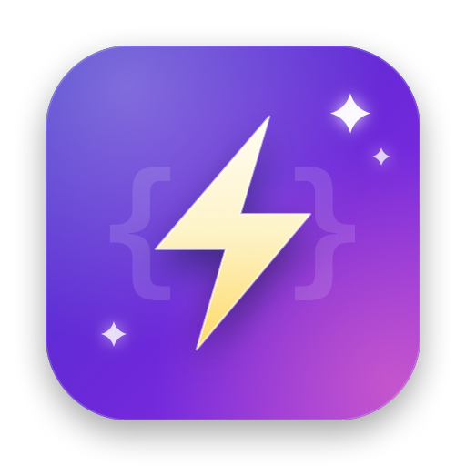
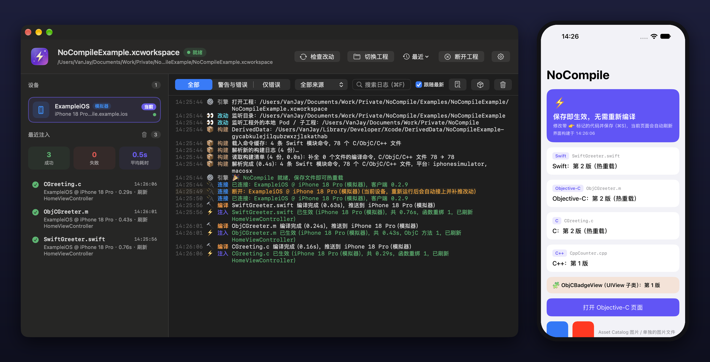

iOS / macOS 热重载工具，支持 C、C++、Objective-C、Swift。修改代码，保存，1~3 秒内就在运行中的 App 里看到效果，无需等待整个工程重新编译。 Hot reload for iOS and macOS, supporting C, C++, Objective-C and Swift. Edit, save, and see the change in your running app within 1–3 seconds, without rebuilding the whole project.

injected()；只在 Debug 配置生效。Inject on save with no injected() boilerplate. Debug configuration only.借鉴 InjectionIII、HotReloading、InjectionNext 的核心原理。Inspired by the core ideas of InjectionIII, HotReloading and InjectionNext.
先在 Debug 配置的 Other Linker Flags 加上 -Xlinker -interposable（CocoaPods 会自动添加），再任选一种方式接入客户端。Add -Xlinker -interposable to Other Linker Flags for Debug (CocoaPods does this for you), then pick one way to add the client.
File → Add Package Dependencies… https://github.com/wangwanjie/NoCompile // 把 NoCompile 库加到 App target，只在 Debug 链接
pod 'NoCompile', :configurations => ['Debug']
github "wangwanjie/NoCompile" carthage update NoCompile --use-xcframeworks # Release 配置用 EXCLUDED_SOURCE_FILE_NAMES 排除 NoCompile.framework
# Build Phases 末尾加 Run Script
"/Applications/NoCompile.app/Contents/Resources/nocompile_copy_bundle.sh"
// 启动时加载 App 内的 bundle（Swift）
#if DEBUG
if let path = Bundle.main.path(forResource: "NoCompile", ofType: "bundle") {
Bundle(path: path)?.load()
}
#endif
各方式的完整步骤、一键接入脚本与真机排查见 接入指南。See the integration guide for full steps, the one-step setup script and device troubleshooting.
不确定芯片类型？打开「苹果菜单 › 关于本机」，看“芯片”一栏。Not sure which chip you have? Open › About This Mac and check “Chip”.
Command+R 运行 App。Click ⚡ in the menu bar → choose your project, then run the app with Command+R.